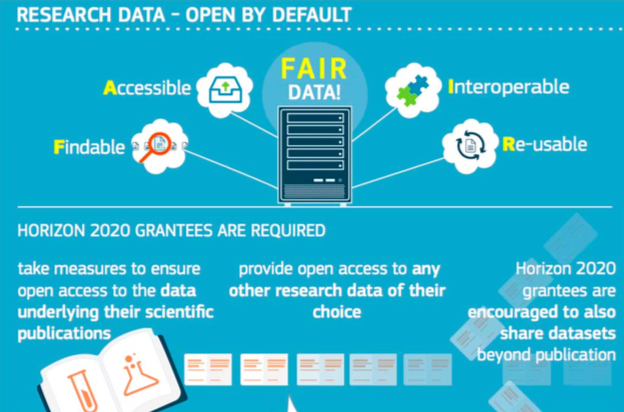
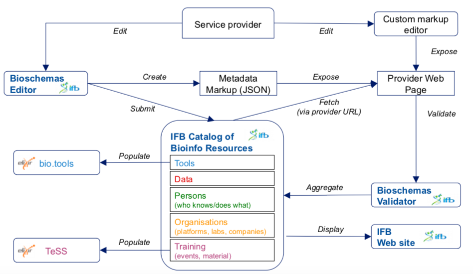
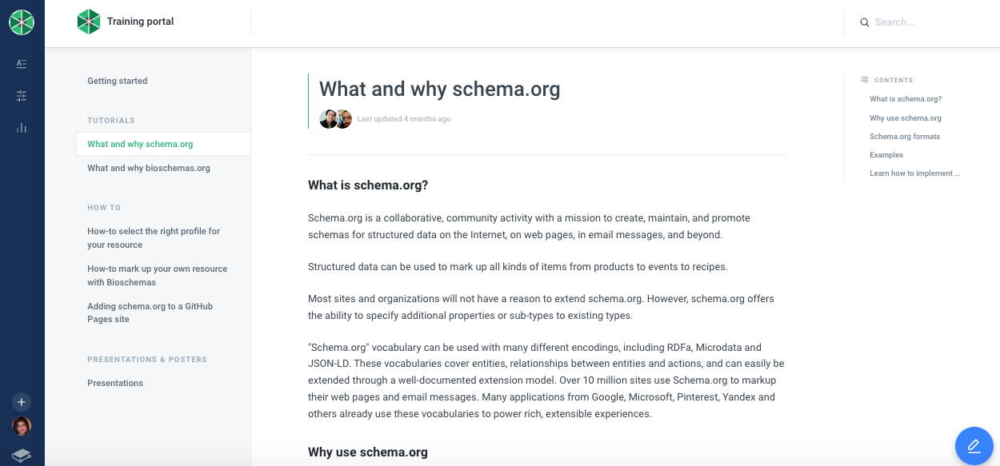
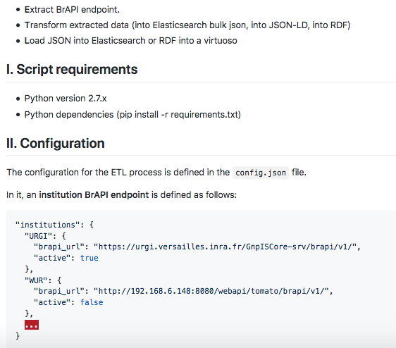

| Generation => Create a new label |
| Assignment => Associate label to object |
| Retrieval => Get object from a label |
| Verification (opt) => check label and object |
| Reverse Lookup (opt) => get label from an object |
| Description (opt) => get metadata of an object |
| Mech. / System | Handle | DOI | Ark | PURL |
| Generation | Yes | Yes | Yes | Yes |
| Assignment | Yes | Yes | Yes | Yes |
| Retrieval | Yes | Yes | Yes | Yes |
| Verification | N.A. | N.A. | N.A. | N.A. |
| Reverse Lookup | N.A. | N.A. | N.A. | N.A. |
| Description | Yes | Yes | Yes | N.A |


